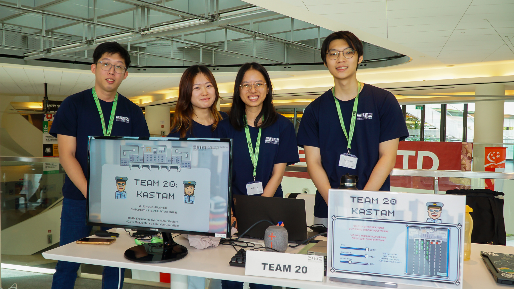

University Assignment
May 2023 - Aug 2023
Kastam is a border simulator game developed as an assignment for the 40.014 Engineering Systems Architecture module. It was designed to educate users on the importance of understanding queuing systems, leveraging M/M/1 queuing theory. The game was built using RShiny, with interactive components created using ShinyJS to incorporate JavaScript. It is fully integrated with an Amazon Web Services MySQL database to store user and leaderboard data. The game features four levels of increasing difficulty, accounting for 216 different user actions.